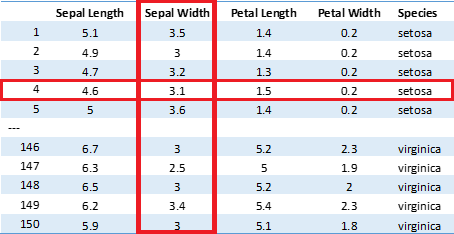

12. Veri Okuma#
Veri bilimi ile uğraşıyorsanız zamanınızın büyük çoğunluğunu verileri temin etmek ve bu verileri temizleyip düzenleyerek analize hazır hale getirmek olacaktır. Bu kısım, veri analizinin havalı tarafı olmadığı için genelde çok fazla söz konusu edilmez ama aslında iyi veri bilimcisi olmanın en temel şartı veri okuma ve temizleme yani verileri analize hazır hale getirme işini doğru yapmaktır. Günlük hayatta, gerek profesyonel gerekse akademik çalışmalarda neredeyse hiçbir zaman veriler size analize hazır biçimde gelmez. Çoğu zaman verileri Python dışında bir programdan almanız gerekir. Yeni bir işte ya da projede çalışmaya başladığınızda sizden önceki çalışmalar farklı bir programda yapılmış olabilir. Ya da sıfırdan bir çalışmaya başlasanız bile ihtiyaç duyduğunuz veriler çoğu zaman Python dışında bir formatta gelecektir. Bu nedenle veri biliminin ilk şartı çalışacağınız verileri analize hazır hale getirmeyi bilmektir.
Veri kaynaklarını aşağıdaki şekilde sınıflandırmamız mümkündür:
Düz dosyalar: Bunlar düz metin (txt), ya da tablo formatında (csv, excel vb.) olabilir
Veri tabanı sistemleri: SQL tabanlı sistemlerdir. Bunlar SQL, MySQL, PostgreSQL gibi farklı SQL tipleri olabilir.
HTML: Web kaynaklı dosyalar
İstatistiksel programlar: Genelde ticari amaçlı kullanılan ve ücretli olan SAS, STATA veya SPSS gibi dosyalar.
12.1. Düz Dosyalardan Veri Okuma#
Düz dosyalar genel olarak .txt, .csv gibi tablo formatında veri içeren dosyalardır. Veri analizi açısından bakacak olursak çalışmalarımızda gerçekleştirdiğimiz analizlerin çoğu satır ve sütunlardan oluşan tablolar formatındadır. Bu tablolarda bir satır bir veriyi ya da gözlemi belirtirken sütunlar da bu gözleme ilişkin farklı özellikleri ya da değişkenleri belirtir. Daha önceki bölümlerde gördüğümüz aşağıdaki iris veri setine bakalım. Toplam 150 gözlemden oluşan bu veri setinde her bir satır farklı bir çiçeğe ait ölçümleri göstermektedir. Bu ölçümlerin neler olduğunu da sütunlarda görüyoruz. Veri analizinde metin, csv ya da excel formatındaki dosyalardan okuduğumuz veriler genellikle bu formatta yapılandırılmıştır.

12.1.1. Metin Dosyalarından Veri Okuma#
Metin dosyaları .txt uzantısına sahip düz metin formatında olan dosyalardır. Bir metin dosyasından veri okumak için önce dosyayla bağlantı sağlanmalıdır. Python, open() fonksiyonu bu bağlantıyı sağlar:
baglanti = open('iris.txt', mode = 'r')
Fonksiyondaki ilk argüman dosya ismi, ikinci argüman ise dosyanın hangi modda okunacağıdır. Dosyadan sadece veri okumak için bu argümanı ‘r’ (read) olarak belirtiyoruz. Bağlantıyı okuma modunda kurarak ham veride herhangi bir değişiklik yapmanın önüne geçmiş oluyoruz. Bağlantı sırasında dosyaya veri yazmak için bu argümanı ‘w’ (write) yapmamız gerekir. Bağlantı dosyasının bulunduğu dizin yolunu da açıkça yazmak gerekebilir: “C:/Users/ilker/Desktop/iris.txt” gibi.
Dosyadan veri okumak için sadece bağlantı kurmak yetmez. Şimdi da dosyadan veri okumalıyız. Bunun için de bağlantı üzerinde .read() metodunu kullanıyoruz: veri = baglanti.read().Son olarak kurduğumuz bağlantıyı kapatmamız gerekiyor: baglanti.close()
Şimdi bütün işlemlerin bir arada görelim.
baglanti = open("data/iris.txt", mode="r")
veri = baglanti.read()
baglanti.close()
print(veri)
5.1 3.5 1.4 0.2
4.9 3.0 1.4 0.2
4.7 3.2 1.3 0.2
4.6 3.1 1.5 0.2
5.0 3.6 1.4 0.2
5.4 3.9 1.7 0.4
4.6 3.4 1.4 0.3
5.0 3.4 1.5 0.2
4.4 2.9 1.4 0.2
4.9 3.1 1.5 0.1
5.4 3.7 1.5 0.2
4.8 3.4 1.6 0.2
4.8 3.0 1.4 0.1
4.3 3.0 1.1 0.1
5.8 4.0 1.2 0.2
5.7 4.4 1.5 0.4
5.4 3.9 1.3 0.4
5.1 3.5 1.4 0.3
5.7 3.8 1.7 0.3
5.1 3.8 1.5 0.3
5.4 3.4 1.7 0.2
5.1 3.7 1.5 0.4
4.6 3.6 1.0 0.2
5.1 3.3 1.7 0.5
4.8 3.4 1.9 0.2
5.0 3.0 1.6 0.2
5.0 3.4 1.6 0.4
5.2 3.5 1.5 0.2
5.2 3.4 1.4 0.2
4.7 3.2 1.6 0.2
4.8 3.1 1.6 0.2
5.4 3.4 1.5 0.4
5.2 4.1 1.5 0.1
5.5 4.2 1.4 0.2
4.9 3.1 1.5 0.2
5.0 3.2 1.2 0.2
5.5 3.5 1.3 0.2
4.9 3.6 1.4 0.1
4.4 3.0 1.3 0.2
5.1 3.4 1.5 0.2
5.0 3.5 1.3 0.3
4.5 2.3 1.3 0.3
4.4 3.2 1.3 0.2
5.0 3.5 1.6 0.6
5.1 3.8 1.9 0.4
4.8 3.0 1.4 0.3
5.1 3.8 1.6 0.2
4.6 3.2 1.4 0.2
5.3 3.7 1.5 0.2
5.0 3.3 1.4 0.2
7.0 3.2 4.7 1.4
6.4 3.2 4.5 1.5
6.9 3.1 4.9 1.5
5.5 2.3 4.0 1.3
6.5 2.8 4.6 1.5
5.7 2.8 4.5 1.3
6.3 3.3 4.7 1.6
4.9 2.4 3.3 1.0
6.6 2.9 4.6 1.3
5.2 2.7 3.9 1.4
5.0 2.0 3.5 1.0
5.9 3.0 4.2 1.5
6.0 2.2 4.0 1.0
6.1 2.9 4.7 1.4
5.6 2.9 3.6 1.3
6.7 3.1 4.4 1.4
5.6 3.0 4.5 1.5
5.8 2.7 4.1 1.0
6.2 2.2 4.5 1.5
5.6 2.5 3.9 1.1
5.9 3.2 4.8 1.8
6.1 2.8 4.0 1.3
6.3 2.5 4.9 1.5
6.1 2.8 4.7 1.2
6.4 2.9 4.3 1.3
6.6 3.0 4.4 1.4
6.8 2.8 4.8 1.4
6.7 3.0 5.0 1.7
6.0 2.9 4.5 1.5
5.7 2.6 3.5 1.0
5.5 2.4 3.8 1.1
5.5 2.4 3.7 1.0
5.8 2.7 3.9 1.2
6.0 2.7 5.1 1.6
5.4 3.0 4.5 1.5
6.0 3.4 4.5 1.6
6.7 3.1 4.7 1.5
6.3 2.3 4.4 1.3
5.6 3.0 4.1 1.3
5.5 2.5 4.0 1.3
5.5 2.6 4.4 1.2
6.1 3.0 4.6 1.4
5.8 2.6 4.0 1.2
5.0 2.3 3.3 1.0
5.6 2.7 4.2 1.3
5.7 3.0 4.2 1.2
5.7 2.9 4.2 1.3
6.2 2.9 4.3 1.3
5.1 2.5 3.0 1.1
5.7 2.8 4.1 1.3
6.3 3.3 6.0 2.5
5.8 2.7 5.1 1.9
7.1 3.0 5.9 2.1
6.3 2.9 5.6 1.8
6.5 3.0 5.8 2.2
7.6 3.0 6.6 2.1
4.9 2.5 4.5 1.7
7.3 2.9 6.3 1.8
6.7 2.5 5.8 1.8
7.2 3.6 6.1 2.5
6.5 3.2 5.1 2.0
6.4 2.7 5.3 1.9
6.8 3.0 5.5 2.1
5.7 2.5 5.0 2.0
5.8 2.8 5.1 2.4
6.4 3.2 5.3 2.3
6.5 3.0 5.5 1.8
7.7 3.8 6.7 2.2
7.7 2.6 6.9 2.3
6.0 2.2 5.0 1.5
6.9 3.2 5.7 2.3
5.6 2.8 4.9 2.0
7.7 2.8 6.7 2.0
6.3 2.7 4.9 1.8
6.7 3.3 5.7 2.1
7.2 3.2 6.0 1.8
6.2 2.8 4.8 1.8
6.1 3.0 4.9 1.8
6.4 2.8 5.6 2.1
7.2 3.0 5.8 1.6
7.4 2.8 6.1 1.9
7.9 3.8 6.4 2.0
6.4 2.8 5.6 2.2
6.3 2.8 5.1 1.5
6.1 2.6 5.6 1.4
7.7 3.0 6.1 2.3
6.3 3.4 5.6 2.4
6.4 3.1 5.5 1.8
6.0 3.0 4.8 1.8
6.9 3.1 5.4 2.1
6.7 3.1 5.6 2.4
6.9 3.1 5.1 2.3
5.8 2.7 5.1 1.9
6.8 3.2 5.9 2.3
6.7 3.3 5.7 2.5
6.7 3.0 5.2 2.3
6.3 2.5 5.0 1.9
6.5 3.0 5.2 2.0
6.2 3.4 5.4 2.3
5.9 3.0 5.1 1.8
Aynı işlemi with fonksiyonu ile de yapabiliriz. Bu şekilde .close() metodunu kullanmamıza da gerek kalmaz.
with open("data/iris.txt", mode = 'r') as baglanti:
print(baglanti.read())
5.1 3.5 1.4 0.2
4.9 3.0 1.4 0.2
4.7 3.2 1.3 0.2
4.6 3.1 1.5 0.2
5.0 3.6 1.4 0.2
5.4 3.9 1.7 0.4
4.6 3.4 1.4 0.3
5.0 3.4 1.5 0.2
4.4 2.9 1.4 0.2
4.9 3.1 1.5 0.1
5.4 3.7 1.5 0.2
4.8 3.4 1.6 0.2
4.8 3.0 1.4 0.1
4.3 3.0 1.1 0.1
5.8 4.0 1.2 0.2
5.7 4.4 1.5 0.4
5.4 3.9 1.3 0.4
5.1 3.5 1.4 0.3
5.7 3.8 1.7 0.3
5.1 3.8 1.5 0.3
5.4 3.4 1.7 0.2
5.1 3.7 1.5 0.4
4.6 3.6 1.0 0.2
5.1 3.3 1.7 0.5
4.8 3.4 1.9 0.2
5.0 3.0 1.6 0.2
5.0 3.4 1.6 0.4
5.2 3.5 1.5 0.2
5.2 3.4 1.4 0.2
4.7 3.2 1.6 0.2
4.8 3.1 1.6 0.2
5.4 3.4 1.5 0.4
5.2 4.1 1.5 0.1
5.5 4.2 1.4 0.2
4.9 3.1 1.5 0.2
5.0 3.2 1.2 0.2
5.5 3.5 1.3 0.2
4.9 3.6 1.4 0.1
4.4 3.0 1.3 0.2
5.1 3.4 1.5 0.2
5.0 3.5 1.3 0.3
4.5 2.3 1.3 0.3
4.4 3.2 1.3 0.2
5.0 3.5 1.6 0.6
5.1 3.8 1.9 0.4
4.8 3.0 1.4 0.3
5.1 3.8 1.6 0.2
4.6 3.2 1.4 0.2
5.3 3.7 1.5 0.2
5.0 3.3 1.4 0.2
7.0 3.2 4.7 1.4
6.4 3.2 4.5 1.5
6.9 3.1 4.9 1.5
5.5 2.3 4.0 1.3
6.5 2.8 4.6 1.5
5.7 2.8 4.5 1.3
6.3 3.3 4.7 1.6
4.9 2.4 3.3 1.0
6.6 2.9 4.6 1.3
5.2 2.7 3.9 1.4
5.0 2.0 3.5 1.0
5.9 3.0 4.2 1.5
6.0 2.2 4.0 1.0
6.1 2.9 4.7 1.4
5.6 2.9 3.6 1.3
6.7 3.1 4.4 1.4
5.6 3.0 4.5 1.5
5.8 2.7 4.1 1.0
6.2 2.2 4.5 1.5
5.6 2.5 3.9 1.1
5.9 3.2 4.8 1.8
6.1 2.8 4.0 1.3
6.3 2.5 4.9 1.5
6.1 2.8 4.7 1.2
6.4 2.9 4.3 1.3
6.6 3.0 4.4 1.4
6.8 2.8 4.8 1.4
6.7 3.0 5.0 1.7
6.0 2.9 4.5 1.5
5.7 2.6 3.5 1.0
5.5 2.4 3.8 1.1
5.5 2.4 3.7 1.0
5.8 2.7 3.9 1.2
6.0 2.7 5.1 1.6
5.4 3.0 4.5 1.5
6.0 3.4 4.5 1.6
6.7 3.1 4.7 1.5
6.3 2.3 4.4 1.3
5.6 3.0 4.1 1.3
5.5 2.5 4.0 1.3
5.5 2.6 4.4 1.2
6.1 3.0 4.6 1.4
5.8 2.6 4.0 1.2
5.0 2.3 3.3 1.0
5.6 2.7 4.2 1.3
5.7 3.0 4.2 1.2
5.7 2.9 4.2 1.3
6.2 2.9 4.3 1.3
5.1 2.5 3.0 1.1
5.7 2.8 4.1 1.3
6.3 3.3 6.0 2.5
5.8 2.7 5.1 1.9
7.1 3.0 5.9 2.1
6.3 2.9 5.6 1.8
6.5 3.0 5.8 2.2
7.6 3.0 6.6 2.1
4.9 2.5 4.5 1.7
7.3 2.9 6.3 1.8
6.7 2.5 5.8 1.8
7.2 3.6 6.1 2.5
6.5 3.2 5.1 2.0
6.4 2.7 5.3 1.9
6.8 3.0 5.5 2.1
5.7 2.5 5.0 2.0
5.8 2.8 5.1 2.4
6.4 3.2 5.3 2.3
6.5 3.0 5.5 1.8
7.7 3.8 6.7 2.2
7.7 2.6 6.9 2.3
6.0 2.2 5.0 1.5
6.9 3.2 5.7 2.3
5.6 2.8 4.9 2.0
7.7 2.8 6.7 2.0
6.3 2.7 4.9 1.8
6.7 3.3 5.7 2.1
7.2 3.2 6.0 1.8
6.2 2.8 4.8 1.8
6.1 3.0 4.9 1.8
6.4 2.8 5.6 2.1
7.2 3.0 5.8 1.6
7.4 2.8 6.1 1.9
7.9 3.8 6.4 2.0
6.4 2.8 5.6 2.2
6.3 2.8 5.1 1.5
6.1 2.6 5.6 1.4
7.7 3.0 6.1 2.3
6.3 3.4 5.6 2.4
6.4 3.1 5.5 1.8
6.0 3.0 4.8 1.8
6.9 3.1 5.4 2.1
6.7 3.1 5.6 2.4
6.9 3.1 5.1 2.3
5.8 2.7 5.1 1.9
6.8 3.2 5.9 2.3
6.7 3.3 5.7 2.5
6.7 3.0 5.2 2.3
6.3 2.5 5.0 1.9
6.5 3.0 5.2 2.0
6.2 3.4 5.4 2.3
5.9 3.0 5.1 1.8
Okuyacağınız dosya çok büyükse dosyanın tamamını tek seferde okumak zor olabilir. Bu nedenle bağlantı kurduktan sonra dosya, satır satır okunabilir. Dosyadan verileri satır satır okumak için .readline() metodu kullanılabilir.
with open("data/iris.txt", mode = 'r') as baglanti:
print(baglanti.readline())
print(baglanti.readline())
print(baglanti.readline())
print(baglanti.readline())
5.1 3.5 1.4 0.2
4.9 3.0 1.4 0.2
4.7 3.2 1.3 0.2
4.6 3.1 1.5 0.2
Önceki bölümlerde Python’da veri analizi olan iki paketi, Numpy ve Pandas paketlerini görmüştük. Bu paketlerde de verileri kendi formatlarına uygun olarak okumak için gerekli fonksiyonlar yer almaktadır. Böylece okuyacağınız verileri hangi pakette analiz edeceksek o paketin ilgili fonksiyonlarını kullanarak aktarabiliriz.
12.1.2. Numpy Modülü ile Veri Okuma#
İlgili bölümde de gördüğümüz üzere Numpy modülü özellikle sayısal verileri okumak ve Analiz etmek için çok kullanışlı bir pakettir. Numpy’da düz dosya okumak için kullanılan iki fonksiyon loadtxt() ve genfromtxt() fonksiyonlarıdır.
import numpy as np
dosya = "data/iris.txt"
veri = np.loadtxt(dosya, delimiter="\t")
print(veri)
[[5.1 3.5 1.4 0.2]
[4.9 3. 1.4 0.2]
[4.7 3.2 1.3 0.2]
[4.6 3.1 1.5 0.2]
[5. 3.6 1.4 0.2]
[5.4 3.9 1.7 0.4]
[4.6 3.4 1.4 0.3]
[5. 3.4 1.5 0.2]
[4.4 2.9 1.4 0.2]
[4.9 3.1 1.5 0.1]
[5.4 3.7 1.5 0.2]
[4.8 3.4 1.6 0.2]
[4.8 3. 1.4 0.1]
[4.3 3. 1.1 0.1]
[5.8 4. 1.2 0.2]
[5.7 4.4 1.5 0.4]
[5.4 3.9 1.3 0.4]
[5.1 3.5 1.4 0.3]
[5.7 3.8 1.7 0.3]
[5.1 3.8 1.5 0.3]
[5.4 3.4 1.7 0.2]
[5.1 3.7 1.5 0.4]
[4.6 3.6 1. 0.2]
[5.1 3.3 1.7 0.5]
[4.8 3.4 1.9 0.2]
[5. 3. 1.6 0.2]
[5. 3.4 1.6 0.4]
[5.2 3.5 1.5 0.2]
[5.2 3.4 1.4 0.2]
[4.7 3.2 1.6 0.2]
[4.8 3.1 1.6 0.2]
[5.4 3.4 1.5 0.4]
[5.2 4.1 1.5 0.1]
[5.5 4.2 1.4 0.2]
[4.9 3.1 1.5 0.2]
[5. 3.2 1.2 0.2]
[5.5 3.5 1.3 0.2]
[4.9 3.6 1.4 0.1]
[4.4 3. 1.3 0.2]
[5.1 3.4 1.5 0.2]
[5. 3.5 1.3 0.3]
[4.5 2.3 1.3 0.3]
[4.4 3.2 1.3 0.2]
[5. 3.5 1.6 0.6]
[5.1 3.8 1.9 0.4]
[4.8 3. 1.4 0.3]
[5.1 3.8 1.6 0.2]
[4.6 3.2 1.4 0.2]
[5.3 3.7 1.5 0.2]
[5. 3.3 1.4 0.2]
[7. 3.2 4.7 1.4]
[6.4 3.2 4.5 1.5]
[6.9 3.1 4.9 1.5]
[5.5 2.3 4. 1.3]
[6.5 2.8 4.6 1.5]
[5.7 2.8 4.5 1.3]
[6.3 3.3 4.7 1.6]
[4.9 2.4 3.3 1. ]
[6.6 2.9 4.6 1.3]
[5.2 2.7 3.9 1.4]
[5. 2. 3.5 1. ]
[5.9 3. 4.2 1.5]
[6. 2.2 4. 1. ]
[6.1 2.9 4.7 1.4]
[5.6 2.9 3.6 1.3]
[6.7 3.1 4.4 1.4]
[5.6 3. 4.5 1.5]
[5.8 2.7 4.1 1. ]
[6.2 2.2 4.5 1.5]
[5.6 2.5 3.9 1.1]
[5.9 3.2 4.8 1.8]
[6.1 2.8 4. 1.3]
[6.3 2.5 4.9 1.5]
[6.1 2.8 4.7 1.2]
[6.4 2.9 4.3 1.3]
[6.6 3. 4.4 1.4]
[6.8 2.8 4.8 1.4]
[6.7 3. 5. 1.7]
[6. 2.9 4.5 1.5]
[5.7 2.6 3.5 1. ]
[5.5 2.4 3.8 1.1]
[5.5 2.4 3.7 1. ]
[5.8 2.7 3.9 1.2]
[6. 2.7 5.1 1.6]
[5.4 3. 4.5 1.5]
[6. 3.4 4.5 1.6]
[6.7 3.1 4.7 1.5]
[6.3 2.3 4.4 1.3]
[5.6 3. 4.1 1.3]
[5.5 2.5 4. 1.3]
[5.5 2.6 4.4 1.2]
[6.1 3. 4.6 1.4]
[5.8 2.6 4. 1.2]
[5. 2.3 3.3 1. ]
[5.6 2.7 4.2 1.3]
[5.7 3. 4.2 1.2]
[5.7 2.9 4.2 1.3]
[6.2 2.9 4.3 1.3]
[5.1 2.5 3. 1.1]
[5.7 2.8 4.1 1.3]
[6.3 3.3 6. 2.5]
[5.8 2.7 5.1 1.9]
[7.1 3. 5.9 2.1]
[6.3 2.9 5.6 1.8]
[6.5 3. 5.8 2.2]
[7.6 3. 6.6 2.1]
[4.9 2.5 4.5 1.7]
[7.3 2.9 6.3 1.8]
[6.7 2.5 5.8 1.8]
[7.2 3.6 6.1 2.5]
[6.5 3.2 5.1 2. ]
[6.4 2.7 5.3 1.9]
[6.8 3. 5.5 2.1]
[5.7 2.5 5. 2. ]
[5.8 2.8 5.1 2.4]
[6.4 3.2 5.3 2.3]
[6.5 3. 5.5 1.8]
[7.7 3.8 6.7 2.2]
[7.7 2.6 6.9 2.3]
[6. 2.2 5. 1.5]
[6.9 3.2 5.7 2.3]
[5.6 2.8 4.9 2. ]
[7.7 2.8 6.7 2. ]
[6.3 2.7 4.9 1.8]
[6.7 3.3 5.7 2.1]
[7.2 3.2 6. 1.8]
[6.2 2.8 4.8 1.8]
[6.1 3. 4.9 1.8]
[6.4 2.8 5.6 2.1]
[7.2 3. 5.8 1.6]
[7.4 2.8 6.1 1.9]
[7.9 3.8 6.4 2. ]
[6.4 2.8 5.6 2.2]
[6.3 2.8 5.1 1.5]
[6.1 2.6 5.6 1.4]
[7.7 3. 6.1 2.3]
[6.3 3.4 5.6 2.4]
[6.4 3.1 5.5 1.8]
[6. 3. 4.8 1.8]
[6.9 3.1 5.4 2.1]
[6.7 3.1 5.6 2.4]
[6.9 3.1 5.1 2.3]
[5.8 2.7 5.1 1.9]
[6.8 3.2 5.9 2.3]
[6.7 3.3 5.7 2.5]
[6.7 3. 5.2 2.3]
[6.3 2.5 5. 1.9]
[6.5 3. 5.2 2. ]
[6.2 3.4 5.4 2.3]
[5.9 3. 5.1 1.8]]
Loadtxt fonksiyonundaki ikinci argüman olan delimiter, bir satırdaki verilerin birbirlerinden hangi işaretle ayrıldıklarını belirtir. Bizim dosyamızda veriler virgül ile ayrılmış olduğu için argümanda bunu belirtiyoruz. Veriler, örneğin sekme yani tab ile ayrılmışsa virgül yerine \t yazmamız gerekirdi. Çoğu zaman olduğu gibi dosyada ilk satırda sütun başlıkları yer almakta ise bu durumda üçüncü bir argüman olarak skiprows kullanılır. Bu argüman, dosya başından itibaren kaç satırın atlanacağını belirtir.
veri = np.loadtxt(dosya, delimiter="\t", skiprows = 10)
print(veri)
[[5.4 3.7 1.5 0.2]
[4.8 3.4 1.6 0.2]
[4.8 3. 1.4 0.1]
[4.3 3. 1.1 0.1]
[5.8 4. 1.2 0.2]
[5.7 4.4 1.5 0.4]
[5.4 3.9 1.3 0.4]
[5.1 3.5 1.4 0.3]
[5.7 3.8 1.7 0.3]
[5.1 3.8 1.5 0.3]
[5.4 3.4 1.7 0.2]
[5.1 3.7 1.5 0.4]
[4.6 3.6 1. 0.2]
[5.1 3.3 1.7 0.5]
[4.8 3.4 1.9 0.2]
[5. 3. 1.6 0.2]
[5. 3.4 1.6 0.4]
[5.2 3.5 1.5 0.2]
[5.2 3.4 1.4 0.2]
[4.7 3.2 1.6 0.2]
[4.8 3.1 1.6 0.2]
[5.4 3.4 1.5 0.4]
[5.2 4.1 1.5 0.1]
[5.5 4.2 1.4 0.2]
[4.9 3.1 1.5 0.2]
[5. 3.2 1.2 0.2]
[5.5 3.5 1.3 0.2]
[4.9 3.6 1.4 0.1]
[4.4 3. 1.3 0.2]
[5.1 3.4 1.5 0.2]
[5. 3.5 1.3 0.3]
[4.5 2.3 1.3 0.3]
[4.4 3.2 1.3 0.2]
[5. 3.5 1.6 0.6]
[5.1 3.8 1.9 0.4]
[4.8 3. 1.4 0.3]
[5.1 3.8 1.6 0.2]
[4.6 3.2 1.4 0.2]
[5.3 3.7 1.5 0.2]
[5. 3.3 1.4 0.2]
[7. 3.2 4.7 1.4]
[6.4 3.2 4.5 1.5]
[6.9 3.1 4.9 1.5]
[5.5 2.3 4. 1.3]
[6.5 2.8 4.6 1.5]
[5.7 2.8 4.5 1.3]
[6.3 3.3 4.7 1.6]
[4.9 2.4 3.3 1. ]
[6.6 2.9 4.6 1.3]
[5.2 2.7 3.9 1.4]
[5. 2. 3.5 1. ]
[5.9 3. 4.2 1.5]
[6. 2.2 4. 1. ]
[6.1 2.9 4.7 1.4]
[5.6 2.9 3.6 1.3]
[6.7 3.1 4.4 1.4]
[5.6 3. 4.5 1.5]
[5.8 2.7 4.1 1. ]
[6.2 2.2 4.5 1.5]
[5.6 2.5 3.9 1.1]
[5.9 3.2 4.8 1.8]
[6.1 2.8 4. 1.3]
[6.3 2.5 4.9 1.5]
[6.1 2.8 4.7 1.2]
[6.4 2.9 4.3 1.3]
[6.6 3. 4.4 1.4]
[6.8 2.8 4.8 1.4]
[6.7 3. 5. 1.7]
[6. 2.9 4.5 1.5]
[5.7 2.6 3.5 1. ]
[5.5 2.4 3.8 1.1]
[5.5 2.4 3.7 1. ]
[5.8 2.7 3.9 1.2]
[6. 2.7 5.1 1.6]
[5.4 3. 4.5 1.5]
[6. 3.4 4.5 1.6]
[6.7 3.1 4.7 1.5]
[6.3 2.3 4.4 1.3]
[5.6 3. 4.1 1.3]
[5.5 2.5 4. 1.3]
[5.5 2.6 4.4 1.2]
[6.1 3. 4.6 1.4]
[5.8 2.6 4. 1.2]
[5. 2.3 3.3 1. ]
[5.6 2.7 4.2 1.3]
[5.7 3. 4.2 1.2]
[5.7 2.9 4.2 1.3]
[6.2 2.9 4.3 1.3]
[5.1 2.5 3. 1.1]
[5.7 2.8 4.1 1.3]
[6.3 3.3 6. 2.5]
[5.8 2.7 5.1 1.9]
[7.1 3. 5.9 2.1]
[6.3 2.9 5.6 1.8]
[6.5 3. 5.8 2.2]
[7.6 3. 6.6 2.1]
[4.9 2.5 4.5 1.7]
[7.3 2.9 6.3 1.8]
[6.7 2.5 5.8 1.8]
[7.2 3.6 6.1 2.5]
[6.5 3.2 5.1 2. ]
[6.4 2.7 5.3 1.9]
[6.8 3. 5.5 2.1]
[5.7 2.5 5. 2. ]
[5.8 2.8 5.1 2.4]
[6.4 3.2 5.3 2.3]
[6.5 3. 5.5 1.8]
[7.7 3.8 6.7 2.2]
[7.7 2.6 6.9 2.3]
[6. 2.2 5. 1.5]
[6.9 3.2 5.7 2.3]
[5.6 2.8 4.9 2. ]
[7.7 2.8 6.7 2. ]
[6.3 2.7 4.9 1.8]
[6.7 3.3 5.7 2.1]
[7.2 3.2 6. 1.8]
[6.2 2.8 4.8 1.8]
[6.1 3. 4.9 1.8]
[6.4 2.8 5.6 2.1]
[7.2 3. 5.8 1.6]
[7.4 2.8 6.1 1.9]
[7.9 3.8 6.4 2. ]
[6.4 2.8 5.6 2.2]
[6.3 2.8 5.1 1.5]
[6.1 2.6 5.6 1.4]
[7.7 3. 6.1 2.3]
[6.3 3.4 5.6 2.4]
[6.4 3.1 5.5 1.8]
[6. 3. 4.8 1.8]
[6.9 3.1 5.4 2.1]
[6.7 3.1 5.6 2.4]
[6.9 3.1 5.1 2.3]
[5.8 2.7 5.1 1.9]
[6.8 3.2 5.9 2.3]
[6.7 3.3 5.7 2.5]
[6.7 3. 5.2 2.3]
[6.3 2.5 5. 1.9]
[6.5 3. 5.2 2. ]
[6.2 3.4 5.4 2.3]
[5.9 3. 5.1 1.8]]
Kullanışlı bir başka argüman da usecols argümanıdır. Bu da orijinal dosyadan hangi sütunların dikkate alınacağını gösterir. Örneğin, sadece 1. ve 3. sütunlardan veri almak istiyorsanız,
veri = np.loadtxt(dosya, delimiter="\t", usecols=[0, 2])
yazmanız gerekir. Python’da sıralamanın sıfırdan başladığını tekrar hatırlayalım. Dosyadan verilerin hangi veri tipinde okunacağını belirtmek için de dtype argümanı kullanılır. Örneğin, okuyacağınız dosyada metin türünde veriler yer alabilir. Verileri metin olarak okumak için loadtxt fonksiyonunda dtype=str yazmanız gerekir.
Çoğu zaman okuyacağımız tabloda farklı türdeki veri sütunları yer alabilir. Bu durumda .loadtxt() metodu işe yaramayacaktır. Bunun yerine .genfromtxt() metodunu kullanabiliriz. Bu metodda, dtype=None olarak belirtirsek program her sütundaki veri tipini otomatik olarak belirlemeye çalışacaktır. Numpy dizileri aynı türde verilerden oluşmak zorundadır. Bu nedenle farklı türdeki verileri okuduğumuz zaman dizilerden oluşan bir dizi elde ederiz. Ana diziyi oluşturan diziler verinin her bir satırını belirtir.
dosya = "data/iris.txt"
veri = np.genfromtxt(dosya, delimiter="\t", dtype=None)
print(veri)
[[5.1 3.5 1.4 0.2]
[4.9 3. 1.4 0.2]
[4.7 3.2 1.3 0.2]
[4.6 3.1 1.5 0.2]
[5. 3.6 1.4 0.2]
[5.4 3.9 1.7 0.4]
[4.6 3.4 1.4 0.3]
[5. 3.4 1.5 0.2]
[4.4 2.9 1.4 0.2]
[4.9 3.1 1.5 0.1]
[5.4 3.7 1.5 0.2]
[4.8 3.4 1.6 0.2]
[4.8 3. 1.4 0.1]
[4.3 3. 1.1 0.1]
[5.8 4. 1.2 0.2]
[5.7 4.4 1.5 0.4]
[5.4 3.9 1.3 0.4]
[5.1 3.5 1.4 0.3]
[5.7 3.8 1.7 0.3]
[5.1 3.8 1.5 0.3]
[5.4 3.4 1.7 0.2]
[5.1 3.7 1.5 0.4]
[4.6 3.6 1. 0.2]
[5.1 3.3 1.7 0.5]
[4.8 3.4 1.9 0.2]
[5. 3. 1.6 0.2]
[5. 3.4 1.6 0.4]
[5.2 3.5 1.5 0.2]
[5.2 3.4 1.4 0.2]
[4.7 3.2 1.6 0.2]
[4.8 3.1 1.6 0.2]
[5.4 3.4 1.5 0.4]
[5.2 4.1 1.5 0.1]
[5.5 4.2 1.4 0.2]
[4.9 3.1 1.5 0.2]
[5. 3.2 1.2 0.2]
[5.5 3.5 1.3 0.2]
[4.9 3.6 1.4 0.1]
[4.4 3. 1.3 0.2]
[5.1 3.4 1.5 0.2]
[5. 3.5 1.3 0.3]
[4.5 2.3 1.3 0.3]
[4.4 3.2 1.3 0.2]
[5. 3.5 1.6 0.6]
[5.1 3.8 1.9 0.4]
[4.8 3. 1.4 0.3]
[5.1 3.8 1.6 0.2]
[4.6 3.2 1.4 0.2]
[5.3 3.7 1.5 0.2]
[5. 3.3 1.4 0.2]
[7. 3.2 4.7 1.4]
[6.4 3.2 4.5 1.5]
[6.9 3.1 4.9 1.5]
[5.5 2.3 4. 1.3]
[6.5 2.8 4.6 1.5]
[5.7 2.8 4.5 1.3]
[6.3 3.3 4.7 1.6]
[4.9 2.4 3.3 1. ]
[6.6 2.9 4.6 1.3]
[5.2 2.7 3.9 1.4]
[5. 2. 3.5 1. ]
[5.9 3. 4.2 1.5]
[6. 2.2 4. 1. ]
[6.1 2.9 4.7 1.4]
[5.6 2.9 3.6 1.3]
[6.7 3.1 4.4 1.4]
[5.6 3. 4.5 1.5]
[5.8 2.7 4.1 1. ]
[6.2 2.2 4.5 1.5]
[5.6 2.5 3.9 1.1]
[5.9 3.2 4.8 1.8]
[6.1 2.8 4. 1.3]
[6.3 2.5 4.9 1.5]
[6.1 2.8 4.7 1.2]
[6.4 2.9 4.3 1.3]
[6.6 3. 4.4 1.4]
[6.8 2.8 4.8 1.4]
[6.7 3. 5. 1.7]
[6. 2.9 4.5 1.5]
[5.7 2.6 3.5 1. ]
[5.5 2.4 3.8 1.1]
[5.5 2.4 3.7 1. ]
[5.8 2.7 3.9 1.2]
[6. 2.7 5.1 1.6]
[5.4 3. 4.5 1.5]
[6. 3.4 4.5 1.6]
[6.7 3.1 4.7 1.5]
[6.3 2.3 4.4 1.3]
[5.6 3. 4.1 1.3]
[5.5 2.5 4. 1.3]
[5.5 2.6 4.4 1.2]
[6.1 3. 4.6 1.4]
[5.8 2.6 4. 1.2]
[5. 2.3 3.3 1. ]
[5.6 2.7 4.2 1.3]
[5.7 3. 4.2 1.2]
[5.7 2.9 4.2 1.3]
[6.2 2.9 4.3 1.3]
[5.1 2.5 3. 1.1]
[5.7 2.8 4.1 1.3]
[6.3 3.3 6. 2.5]
[5.8 2.7 5.1 1.9]
[7.1 3. 5.9 2.1]
[6.3 2.9 5.6 1.8]
[6.5 3. 5.8 2.2]
[7.6 3. 6.6 2.1]
[4.9 2.5 4.5 1.7]
[7.3 2.9 6.3 1.8]
[6.7 2.5 5.8 1.8]
[7.2 3.6 6.1 2.5]
[6.5 3.2 5.1 2. ]
[6.4 2.7 5.3 1.9]
[6.8 3. 5.5 2.1]
[5.7 2.5 5. 2. ]
[5.8 2.8 5.1 2.4]
[6.4 3.2 5.3 2.3]
[6.5 3. 5.5 1.8]
[7.7 3.8 6.7 2.2]
[7.7 2.6 6.9 2.3]
[6. 2.2 5. 1.5]
[6.9 3.2 5.7 2.3]
[5.6 2.8 4.9 2. ]
[7.7 2.8 6.7 2. ]
[6.3 2.7 4.9 1.8]
[6.7 3.3 5.7 2.1]
[7.2 3.2 6. 1.8]
[6.2 2.8 4.8 1.8]
[6.1 3. 4.9 1.8]
[6.4 2.8 5.6 2.1]
[7.2 3. 5.8 1.6]
[7.4 2.8 6.1 1.9]
[7.9 3.8 6.4 2. ]
[6.4 2.8 5.6 2.2]
[6.3 2.8 5.1 1.5]
[6.1 2.6 5.6 1.4]
[7.7 3. 6.1 2.3]
[6.3 3.4 5.6 2.4]
[6.4 3.1 5.5 1.8]
[6. 3. 4.8 1.8]
[6.9 3.1 5.4 2.1]
[6.7 3.1 5.6 2.4]
[6.9 3.1 5.1 2.3]
[5.8 2.7 5.1 1.9]
[6.8 3.2 5.9 2.3]
[6.7 3.3 5.7 2.5]
[6.7 3. 5.2 2.3]
[6.3 2.5 5. 1.9]
[6.5 3. 5.2 2. ]
[6.2 3.4 5.4 2.3]
[5.9 3. 5.1 1.8]]
Csv formatındaki dosyaları okumak için kullanılan benzer bir diğer fonksiyon da recfromcsv() metodudur.
dosya = "data/iris.csv"
veri = np.recfromcsv(dosya, delimiter=",", names=True, encoding="utf-8")
print(veri)
[(5.1, 3.5, 1.4, 0.2, 'setosa') (4.9, 3. , 1.4, 0.2, 'setosa')
(4.7, 3.2, 1.3, 0.2, 'setosa') (4.6, 3.1, 1.5, 0.2, 'setosa')
(5. , 3.6, 1.4, 0.2, 'setosa') (5.4, 3.9, 1.7, 0.4, 'setosa')
(4.6, 3.4, 1.4, 0.3, 'setosa') (5. , 3.4, 1.5, 0.2, 'setosa')
(4.4, 2.9, 1.4, 0.2, 'setosa') (4.9, 3.1, 1.5, 0.1, 'setosa')
(5.4, 3.7, 1.5, 0.2, 'setosa') (4.8, 3.4, 1.6, 0.2, 'setosa')
(4.8, 3. , 1.4, 0.1, 'setosa') (4.3, 3. , 1.1, 0.1, 'setosa')
(5.8, 4. , 1.2, 0.2, 'setosa') (5.7, 4.4, 1.5, 0.4, 'setosa')
(5.4, 3.9, 1.3, 0.4, 'setosa') (5.1, 3.5, 1.4, 0.3, 'setosa')
(5.7, 3.8, 1.7, 0.3, 'setosa') (5.1, 3.8, 1.5, 0.3, 'setosa')
(5.4, 3.4, 1.7, 0.2, 'setosa') (5.1, 3.7, 1.5, 0.4, 'setosa')
(4.6, 3.6, 1. , 0.2, 'setosa') (5.1, 3.3, 1.7, 0.5, 'setosa')
(4.8, 3.4, 1.9, 0.2, 'setosa') (5. , 3. , 1.6, 0.2, 'setosa')
(5. , 3.4, 1.6, 0.4, 'setosa') (5.2, 3.5, 1.5, 0.2, 'setosa')
(5.2, 3.4, 1.4, 0.2, 'setosa') (4.7, 3.2, 1.6, 0.2, 'setosa')
(4.8, 3.1, 1.6, 0.2, 'setosa') (5.4, 3.4, 1.5, 0.4, 'setosa')
(5.2, 4.1, 1.5, 0.1, 'setosa') (5.5, 4.2, 1.4, 0.2, 'setosa')
(4.9, 3.1, 1.5, 0.2, 'setosa') (5. , 3.2, 1.2, 0.2, 'setosa')
(5.5, 3.5, 1.3, 0.2, 'setosa') (4.9, 3.6, 1.4, 0.1, 'setosa')
(4.4, 3. , 1.3, 0.2, 'setosa') (5.1, 3.4, 1.5, 0.2, 'setosa')
(5. , 3.5, 1.3, 0.3, 'setosa') (4.5, 2.3, 1.3, 0.3, 'setosa')
(4.4, 3.2, 1.3, 0.2, 'setosa') (5. , 3.5, 1.6, 0.6, 'setosa')
(5.1, 3.8, 1.9, 0.4, 'setosa') (4.8, 3. , 1.4, 0.3, 'setosa')
(5.1, 3.8, 1.6, 0.2, 'setosa') (4.6, 3.2, 1.4, 0.2, 'setosa')
(5.3, 3.7, 1.5, 0.2, 'setosa') (5. , 3.3, 1.4, 0.2, 'setosa')
(7. , 3.2, 4.7, 1.4, 'versicolor') (6.4, 3.2, 4.5, 1.5, 'versicolor')
(6.9, 3.1, 4.9, 1.5, 'versicolor') (5.5, 2.3, 4. , 1.3, 'versicolor')
(6.5, 2.8, 4.6, 1.5, 'versicolor') (5.7, 2.8, 4.5, 1.3, 'versicolor')
(6.3, 3.3, 4.7, 1.6, 'versicolor') (4.9, 2.4, 3.3, 1. , 'versicolor')
(6.6, 2.9, 4.6, 1.3, 'versicolor') (5.2, 2.7, 3.9, 1.4, 'versicolor')
(5. , 2. , 3.5, 1. , 'versicolor') (5.9, 3. , 4.2, 1.5, 'versicolor')
(6. , 2.2, 4. , 1. , 'versicolor') (6.1, 2.9, 4.7, 1.4, 'versicolor')
(5.6, 2.9, 3.6, 1.3, 'versicolor') (6.7, 3.1, 4.4, 1.4, 'versicolor')
(5.6, 3. , 4.5, 1.5, 'versicolor') (5.8, 2.7, 4.1, 1. , 'versicolor')
(6.2, 2.2, 4.5, 1.5, 'versicolor') (5.6, 2.5, 3.9, 1.1, 'versicolor')
(5.9, 3.2, 4.8, 1.8, 'versicolor') (6.1, 2.8, 4. , 1.3, 'versicolor')
(6.3, 2.5, 4.9, 1.5, 'versicolor') (6.1, 2.8, 4.7, 1.2, 'versicolor')
(6.4, 2.9, 4.3, 1.3, 'versicolor') (6.6, 3. , 4.4, 1.4, 'versicolor')
(6.8, 2.8, 4.8, 1.4, 'versicolor') (6.7, 3. , 5. , 1.7, 'versicolor')
(6. , 2.9, 4.5, 1.5, 'versicolor') (5.7, 2.6, 3.5, 1. , 'versicolor')
(5.5, 2.4, 3.8, 1.1, 'versicolor') (5.5, 2.4, 3.7, 1. , 'versicolor')
(5.8, 2.7, 3.9, 1.2, 'versicolor') (6. , 2.7, 5.1, 1.6, 'versicolor')
(5.4, 3. , 4.5, 1.5, 'versicolor') (6. , 3.4, 4.5, 1.6, 'versicolor')
(6.7, 3.1, 4.7, 1.5, 'versicolor') (6.3, 2.3, 4.4, 1.3, 'versicolor')
(5.6, 3. , 4.1, 1.3, 'versicolor') (5.5, 2.5, 4. , 1.3, 'versicolor')
(5.5, 2.6, 4.4, 1.2, 'versicolor') (6.1, 3. , 4.6, 1.4, 'versicolor')
(5.8, 2.6, 4. , 1.2, 'versicolor') (5. , 2.3, 3.3, 1. , 'versicolor')
(5.6, 2.7, 4.2, 1.3, 'versicolor') (5.7, 3. , 4.2, 1.2, 'versicolor')
(5.7, 2.9, 4.2, 1.3, 'versicolor') (6.2, 2.9, 4.3, 1.3, 'versicolor')
(5.1, 2.5, 3. , 1.1, 'versicolor') (5.7, 2.8, 4.1, 1.3, 'versicolor')
(6.3, 3.3, 6. , 2.5, 'virginica') (5.8, 2.7, 5.1, 1.9, 'virginica')
(7.1, 3. , 5.9, 2.1, 'virginica') (6.3, 2.9, 5.6, 1.8, 'virginica')
(6.5, 3. , 5.8, 2.2, 'virginica') (7.6, 3. , 6.6, 2.1, 'virginica')
(4.9, 2.5, 4.5, 1.7, 'virginica') (7.3, 2.9, 6.3, 1.8, 'virginica')
(6.7, 2.5, 5.8, 1.8, 'virginica') (7.2, 3.6, 6.1, 2.5, 'virginica')
(6.5, 3.2, 5.1, 2. , 'virginica') (6.4, 2.7, 5.3, 1.9, 'virginica')
(6.8, 3. , 5.5, 2.1, 'virginica') (5.7, 2.5, 5. , 2. , 'virginica')
(5.8, 2.8, 5.1, 2.4, 'virginica') (6.4, 3.2, 5.3, 2.3, 'virginica')
(6.5, 3. , 5.5, 1.8, 'virginica') (7.7, 3.8, 6.7, 2.2, 'virginica')
(7.7, 2.6, 6.9, 2.3, 'virginica') (6. , 2.2, 5. , 1.5, 'virginica')
(6.9, 3.2, 5.7, 2.3, 'virginica') (5.6, 2.8, 4.9, 2. , 'virginica')
(7.7, 2.8, 6.7, 2. , 'virginica') (6.3, 2.7, 4.9, 1.8, 'virginica')
(6.7, 3.3, 5.7, 2.1, 'virginica') (7.2, 3.2, 6. , 1.8, 'virginica')
(6.2, 2.8, 4.8, 1.8, 'virginica') (6.1, 3. , 4.9, 1.8, 'virginica')
(6.4, 2.8, 5.6, 2.1, 'virginica') (7.2, 3. , 5.8, 1.6, 'virginica')
(7.4, 2.8, 6.1, 1.9, 'virginica') (7.9, 3.8, 6.4, 2. , 'virginica')
(6.4, 2.8, 5.6, 2.2, 'virginica') (6.3, 2.8, 5.1, 1.5, 'virginica')
(6.1, 2.6, 5.6, 1.4, 'virginica') (7.7, 3. , 6.1, 2.3, 'virginica')
(6.3, 3.4, 5.6, 2.4, 'virginica') (6.4, 3.1, 5.5, 1.8, 'virginica')
(6. , 3. , 4.8, 1.8, 'virginica') (6.9, 3.1, 5.4, 2.1, 'virginica')
(6.7, 3.1, 5.6, 2.4, 'virginica') (6.9, 3.1, 5.1, 2.3, 'virginica')
(5.8, 2.7, 5.1, 1.9, 'virginica') (6.8, 3.2, 5.9, 2.3, 'virginica')
(6.7, 3.3, 5.7, 2.5, 'virginica') (6.7, 3. , 5.2, 2.3, 'virginica')
(6.3, 2.5, 5. , 1.9, 'virginica') (6.5, 3. , 5.2, 2. , 'virginica')
(6.2, 3.4, 5.4, 2.3, 'virginica') (5.9, 3. , 5.1, 1.8, 'virginica')]
12.1.3. Pandas Modülü ile Veri Okuma#
Numpy dizileri çok faydalı ve hızlı olsa da çalışmalarımızın çoğunda ihtiyaç duyduğumuz esnekliği sağlamaz. Gerçekte kullandığımız verilerin çoğu farklı veri tipindeki sütunlardan oluşur (tipik bir excel tablosunu düşünün). Pandas data framelerden ilgili bölümde bahsetmiştik. Şimdi farklı türdeki dosyaları Pandas data frame olarak okumayı görelim. Pandas modülünde csv dosyası okumak için .read_csv() metodu kullanılır.
import pandas as pd
veri = pd.read_csv("data/iris.csv")
print(veri.head())
sepal_length sepal_width petal_length petal_width species
0 5.1 3.5 1.4 0.2 setosa
1 4.9 3.0 1.4 0.2 setosa
2 4.7 3.2 1.3 0.2 setosa
3 4.6 3.1 1.5 0.2 setosa
4 5.0 3.6 1.4 0.2 setosa
Pandas data frameleri, .values özelliğini kullanarak Numpy dizisine çevirebiliriz.
print(veri.values)
[[5.1 3.5 1.4 0.2 'setosa']
[4.9 3.0 1.4 0.2 'setosa']
[4.7 3.2 1.3 0.2 'setosa']
[4.6 3.1 1.5 0.2 'setosa']
[5.0 3.6 1.4 0.2 'setosa']
[5.4 3.9 1.7 0.4 'setosa']
[4.6 3.4 1.4 0.3 'setosa']
[5.0 3.4 1.5 0.2 'setosa']
[4.4 2.9 1.4 0.2 'setosa']
[4.9 3.1 1.5 0.1 'setosa']
[5.4 3.7 1.5 0.2 'setosa']
[4.8 3.4 1.6 0.2 'setosa']
[4.8 3.0 1.4 0.1 'setosa']
[4.3 3.0 1.1 0.1 'setosa']
[5.8 4.0 1.2 0.2 'setosa']
[5.7 4.4 1.5 0.4 'setosa']
[5.4 3.9 1.3 0.4 'setosa']
[5.1 3.5 1.4 0.3 'setosa']
[5.7 3.8 1.7 0.3 'setosa']
[5.1 3.8 1.5 0.3 'setosa']
[5.4 3.4 1.7 0.2 'setosa']
[5.1 3.7 1.5 0.4 'setosa']
[4.6 3.6 1.0 0.2 'setosa']
[5.1 3.3 1.7 0.5 'setosa']
[4.8 3.4 1.9 0.2 'setosa']
[5.0 3.0 1.6 0.2 'setosa']
[5.0 3.4 1.6 0.4 'setosa']
[5.2 3.5 1.5 0.2 'setosa']
[5.2 3.4 1.4 0.2 'setosa']
[4.7 3.2 1.6 0.2 'setosa']
[4.8 3.1 1.6 0.2 'setosa']
[5.4 3.4 1.5 0.4 'setosa']
[5.2 4.1 1.5 0.1 'setosa']
[5.5 4.2 1.4 0.2 'setosa']
[4.9 3.1 1.5 0.2 'setosa']
[5.0 3.2 1.2 0.2 'setosa']
[5.5 3.5 1.3 0.2 'setosa']
[4.9 3.6 1.4 0.1 'setosa']
[4.4 3.0 1.3 0.2 'setosa']
[5.1 3.4 1.5 0.2 'setosa']
[5.0 3.5 1.3 0.3 'setosa']
[4.5 2.3 1.3 0.3 'setosa']
[4.4 3.2 1.3 0.2 'setosa']
[5.0 3.5 1.6 0.6 'setosa']
[5.1 3.8 1.9 0.4 'setosa']
[4.8 3.0 1.4 0.3 'setosa']
[5.1 3.8 1.6 0.2 'setosa']
[4.6 3.2 1.4 0.2 'setosa']
[5.3 3.7 1.5 0.2 'setosa']
[5.0 3.3 1.4 0.2 'setosa']
[7.0 3.2 4.7 1.4 'versicolor']
[6.4 3.2 4.5 1.5 'versicolor']
[6.9 3.1 4.9 1.5 'versicolor']
[5.5 2.3 4.0 1.3 'versicolor']
[6.5 2.8 4.6 1.5 'versicolor']
[5.7 2.8 4.5 1.3 'versicolor']
[6.3 3.3 4.7 1.6 'versicolor']
[4.9 2.4 3.3 1.0 'versicolor']
[6.6 2.9 4.6 1.3 'versicolor']
[5.2 2.7 3.9 1.4 'versicolor']
[5.0 2.0 3.5 1.0 'versicolor']
[5.9 3.0 4.2 1.5 'versicolor']
[6.0 2.2 4.0 1.0 'versicolor']
[6.1 2.9 4.7 1.4 'versicolor']
[5.6 2.9 3.6 1.3 'versicolor']
[6.7 3.1 4.4 1.4 'versicolor']
[5.6 3.0 4.5 1.5 'versicolor']
[5.8 2.7 4.1 1.0 'versicolor']
[6.2 2.2 4.5 1.5 'versicolor']
[5.6 2.5 3.9 1.1 'versicolor']
[5.9 3.2 4.8 1.8 'versicolor']
[6.1 2.8 4.0 1.3 'versicolor']
[6.3 2.5 4.9 1.5 'versicolor']
[6.1 2.8 4.7 1.2 'versicolor']
[6.4 2.9 4.3 1.3 'versicolor']
[6.6 3.0 4.4 1.4 'versicolor']
[6.8 2.8 4.8 1.4 'versicolor']
[6.7 3.0 5.0 1.7 'versicolor']
[6.0 2.9 4.5 1.5 'versicolor']
[5.7 2.6 3.5 1.0 'versicolor']
[5.5 2.4 3.8 1.1 'versicolor']
[5.5 2.4 3.7 1.0 'versicolor']
[5.8 2.7 3.9 1.2 'versicolor']
[6.0 2.7 5.1 1.6 'versicolor']
[5.4 3.0 4.5 1.5 'versicolor']
[6.0 3.4 4.5 1.6 'versicolor']
[6.7 3.1 4.7 1.5 'versicolor']
[6.3 2.3 4.4 1.3 'versicolor']
[5.6 3.0 4.1 1.3 'versicolor']
[5.5 2.5 4.0 1.3 'versicolor']
[5.5 2.6 4.4 1.2 'versicolor']
[6.1 3.0 4.6 1.4 'versicolor']
[5.8 2.6 4.0 1.2 'versicolor']
[5.0 2.3 3.3 1.0 'versicolor']
[5.6 2.7 4.2 1.3 'versicolor']
[5.7 3.0 4.2 1.2 'versicolor']
[5.7 2.9 4.2 1.3 'versicolor']
[6.2 2.9 4.3 1.3 'versicolor']
[5.1 2.5 3.0 1.1 'versicolor']
[5.7 2.8 4.1 1.3 'versicolor']
[6.3 3.3 6.0 2.5 'virginica']
[5.8 2.7 5.1 1.9 'virginica']
[7.1 3.0 5.9 2.1 'virginica']
[6.3 2.9 5.6 1.8 'virginica']
[6.5 3.0 5.8 2.2 'virginica']
[7.6 3.0 6.6 2.1 'virginica']
[4.9 2.5 4.5 1.7 'virginica']
[7.3 2.9 6.3 1.8 'virginica']
[6.7 2.5 5.8 1.8 'virginica']
[7.2 3.6 6.1 2.5 'virginica']
[6.5 3.2 5.1 2.0 'virginica']
[6.4 2.7 5.3 1.9 'virginica']
[6.8 3.0 5.5 2.1 'virginica']
[5.7 2.5 5.0 2.0 'virginica']
[5.8 2.8 5.1 2.4 'virginica']
[6.4 3.2 5.3 2.3 'virginica']
[6.5 3.0 5.5 1.8 'virginica']
[7.7 3.8 6.7 2.2 'virginica']
[7.7 2.6 6.9 2.3 'virginica']
[6.0 2.2 5.0 1.5 'virginica']
[6.9 3.2 5.7 2.3 'virginica']
[5.6 2.8 4.9 2.0 'virginica']
[7.7 2.8 6.7 2.0 'virginica']
[6.3 2.7 4.9 1.8 'virginica']
[6.7 3.3 5.7 2.1 'virginica']
[7.2 3.2 6.0 1.8 'virginica']
[6.2 2.8 4.8 1.8 'virginica']
[6.1 3.0 4.9 1.8 'virginica']
[6.4 2.8 5.6 2.1 'virginica']
[7.2 3.0 5.8 1.6 'virginica']
[7.4 2.8 6.1 1.9 'virginica']
[7.9 3.8 6.4 2.0 'virginica']
[6.4 2.8 5.6 2.2 'virginica']
[6.3 2.8 5.1 1.5 'virginica']
[6.1 2.6 5.6 1.4 'virginica']
[7.7 3.0 6.1 2.3 'virginica']
[6.3 3.4 5.6 2.4 'virginica']
[6.4 3.1 5.5 1.8 'virginica']
[6.0 3.0 4.8 1.8 'virginica']
[6.9 3.1 5.4 2.1 'virginica']
[6.7 3.1 5.6 2.4 'virginica']
[6.9 3.1 5.1 2.3 'virginica']
[5.8 2.7 5.1 1.9 'virginica']
[6.8 3.2 5.9 2.3 'virginica']
[6.7 3.3 5.7 2.5 'virginica']
[6.7 3.0 5.2 2.3 'virginica']
[6.3 2.5 5.0 1.9 'virginica']
[6.5 3.0 5.2 2.0 'virginica']
[6.2 3.4 5.4 2.3 'virginica']
[5.9 3.0 5.1 1.8 'virginica']]
read_csv() metodu çok sayıda argüman alabilir. Bunlardan birisi dosyadan okunacak satır sayısıdır. Dosyadan, örneğin sadece ilk 3 satırı okumak isityorsak pd.read_csv('dosya_adı', nrows = 3) yazmamız gerekir.
veri = pd.read_csv(dosya, nrows = 3)
print(veri)
sepal_length sepal_width petal_length petal_width species
0 5.1 3.5 1.4 0.2 setosa
1 4.9 3.0 1.4 0.2 setosa
2 4.7 3.2 1.3 0.2 setosa
Benzer şekilde, .read_csv komutu dosyadaki ilk satırın başlık satırı olduğunu varsayar. Dosyada başlık satırı yoksa ve biz herhangi birşey belirtmezse ilk satırdaki veriler sütun başlıkları olarak kabul edilir. Dosyada sütun başlıklarının yer almadığını belirtmek için header=None yazılır. Bu bu durumda, sütunlar 0’dan başlamak üzere sayılarla isimlendirilir.
veri = pd.read_csv("data/iris.csv", header = None)
veri.head()
| 0 | 1 | 2 | 3 | 4 | |
|---|---|---|---|---|---|
| 0 | sepal_length | sepal_width | petal_length | petal_width | species |
| 1 | 5.1 | 3.5 | 1.4 | 0.2 | setosa |
| 2 | 4.9 | 3.0 | 1.4 | 0.2 | setosa |
| 3 | 4.7 | 3.2 | 1.3 | 0.2 | setosa |
| 4 | 4.6 | 3.1 | 1.5 | 0.2 | setosa |
Dosyada başlık satırı yoksa ve biz başlıkları belirtmek istiyorsak names argümanını kullanarak sütunları isimlendirebiliriz.
dosya = "data/iris.csv"
sutunlar = ['sepal_length','sepal_width','petal_length', 'petal_width','species']
veri = pd.read_csv(dosya, header = None, names = sutunlar, skiprows=1)
veri.head()
| sepal_length | sepal_width | petal_length | petal_width | species | |
|---|---|---|---|---|---|
| 0 | 5.1 | 3.5 | 1.4 | 0.2 | setosa |
| 1 | 4.9 | 3.0 | 1.4 | 0.2 | setosa |
| 2 | 4.7 | 3.2 | 1.3 | 0.2 | setosa |
| 3 | 4.6 | 3.1 | 1.5 | 0.2 | setosa |
| 4 | 5.0 | 3.6 | 1.4 | 0.2 | setosa |
Varsayalım ki dosyada sütun başlıkları var ama biz bunların yerine başka isimler kullanmak istiyoruz. Bu durumda yine header argümanı ile sütun başlıklarının yer aldığı satırı belirtiyoruz. Sütun başlıkları çoğunlukla ilk satırda yer alır. Python’da numaralandırmanın 0’dan başladığını hatırlayın. O halde ilk satır numarası 0 be kullanacağımız argüman da header = 0 olacaktır. İkinci olarak yine names argümanını kullanarak vereceğimiz yeni isimleri belirtebiliriz.
veri = pd.read_csv(dosya, header = 0, names = sutunlar)
Dosyada NA (Not Available: erişilemez) veya NaN (Not a Number: Bir sayı değil) gibi tanımsız veriler belirli karakterlerle gösteriliyorsa bunları belirtmek için na_values argümanı kullanılır. Örneğin, bir ankete ait sonuçların kaydedildiği dosyada katılımcıların cevap vermediği her soru *** karakterleri ile belirtilmiş olsun. Bu durumda dosyayı doğrudan okumaktansa *** karakteri görülen yerde NA olması gerektiğini belirtmek için na_values = ‘***’ yazılır. Peki tanımsız veriler farklı sütunlarda farklı karakterlerle belirtilmişse ne yaparız? Bu durumda, na_values argümanına verileri sözlük şeklinde tanımlarız. Örneğin, doğum tarihi bilgisi girmeyen katılımcılar için bu alan 0 ile doğum yeri bilgisi girmeyen katılımcılar içinse *** ile belirtiliyor olsun. Bu sütunlarda belirtilen karakterlerin görülmesi durumunda bunların tanımsız olduğunun anlaşılması için na_values = {‘dogum_tarihi’:[‘0’], ‘dogum_yeri’:[‘***’]} yazarız.
Okunacak csv dosyasında sütun ayıracı virgülden farklı ise bu da sep veya delimiter argümanı ile belirtilir. Örneğin, dosyadaki sütunlar genelde olduğu gibi tab / sekme ile ayrılmışsa pd.read_csv() metodunda sep='\t' (veya delimiter=’\t’) yazılır. Csv dosyalarında sütunlar genellikle noktalı virgül veya virgül ile ayrılır. Virgül, varsayılan ayraç olduğundan ayrıca belirtmenize gerek yoktur.
12.2. Excel Dosyalarından Veri Okuma#
Herhalde gerek iş gerekse akademik çalışmalarda en fazla kullanılan dosya türü excel dosyalarıdır. Bu nedenle veri analizinde sık kullanılan programların hemen hepsinde excel dosyalarından veri okumak olanaklıdır. Python’da excel dosyalarından veri okumanın en kolay yolu Pandas modülünü kullanmaktır.
Pandas modülünde excel dosyasından veri okumak için öncelikle dosya ile bağlantı kurmak gerekir. Bunun için de .ExcelFile() metodu kullanılır. Aşağıdaki kodu çalıştırmak için öncesinde openpyxl modülünü kurmanız gerekir.
import pandas as pd
dosya = 'data/iris.xlsx'
veri = pd.ExcelFile(dosya)
Bir defa dosya ile bağlantı kurulduktan sonra, dosyadaki sayfaları .sheet_names() metodu ile görebiliriz. Dosya yolunu tanımlarken dizin de kullanacaksanız dizinler arasında \ yerine / işareti kullanmaya dikkat etmelisiniz. Bildiğiniz gibi Python’da \ işareti, \n, \t gibi kaçış (escape) karakterlerinde kullanıldığı için dosya yolunda bunun yerine / işaretinin kullanılması gerekiyor.
print(veri.sheet_names)
['iris']
İstediğimiz sayfadaki verileri okumak için .parse() metodunu kullanabiliriz. Burada istediğimiz sayfanın ismini metin olarak ya da sayfa numarasını sayı olarak girmemiz mümkün. Bu açıdan, tablo1 = veri.parsel('Sayfa1') veya tablo1 = veri.parsel(0) aynı sonucu verecektir.
Excel dosyalarından veri okurken .parse() argümanına verebileceğimiz farklı argümanlar da bulunmaktadır. Bunlardan ilki skiprow argümanıdır. Bu argümanı kullanarak sayfada okunmadan atlanmasını istediğimiz satır numaralarını liste olarak iletebiliriz. Excel dosyalarında zaman zaman ilk satırlarda tablolar ile ilgili açıklayıcı bilgilere yer verilir. Bunlar bizim çalışmalarımızda işimize yaramayacağından, doğrudan atlanabilir.
tablo1 = veri.parse(0, skiprows=[0,1,2])
Yukarıdaki komut, excel sayfasındaki 1, 2 ve 3. satırları okumadan atlayacaktır. Aynı şekilde dosyadaki sütunların hepsini okumak istemeyebiliriz. Bu durumda parse_cols argümanını kullanarak almak istediğimiz sütun numaralarını iletebiliriz.
tablo1 = veri.parse(0, skiprows=[0], parse_cols=[1,2,3,4])
Bir başka durumda, ilk satırdaki başlıkları okumayıp kendimiz farklı sütun başlıkları vermek isteyebiliriz. Buna neden ihtiyaç duyalım? Aynı formattaki çok sayıda Excel tablosundan veri çekip bunları birleştirecek bir kod yazdığınızı düşünün. Excel tabloları aynı bilgileri içermesine rağmen, sütun başlıkları, dosyayı kaydedene göre değişmiş olabilir. Örneğin, aynı başlık, bir dosyada “Sipariş No”, bir diğerinde “Sip. No.”, bir başkasında “Sipariş Numarası” şeklinde kaydedilmiş olabilir. Bu dosyaları olduğu gibi okumak sonrasında verilerin birleştirilmesinde soruna yol açacaktır. Bu durumda en doğrusu bütün dosyalarda ilk satırı atlayıp sütunlara kendi seçeceğimiz isimleri vermektir.
tablo1 = veri.parse(0, skiprows=[1], parse_cols=[1,2,3,4],
names = ['sepal_boy','sepal_en','petal_boy','petal_en'])
Tüm argümanlara ileteceğimiz değerlerin liste formatında olmasına ve sayısal değerlerin de Python indeks yapısına uygun olarak 0 ile başladığına dikkat edin.
Excel dosyasından veri okumak için kullanılabilecek bir başka Pandas metodu da .read_excel() metodudur. Bu metodun aldığı önemli argümanlar aşağıdaki gibidir.
sheet_name: Verinin okunacağı sayfa adı
header: Sütun başlıklarının yer aldığı satır. Varsayılan olarak sıfırdır.
skiprows: Baştan itibaren atlanacak satır sayısı.
skip_footer: Sondan itibaren atlanacak satır sayısı.
index_col: İndeks olarak kullanılacak sütun.
names: Dosyada başlık satırı yoksa, başlık isimleri liste olarak iletilebilir.